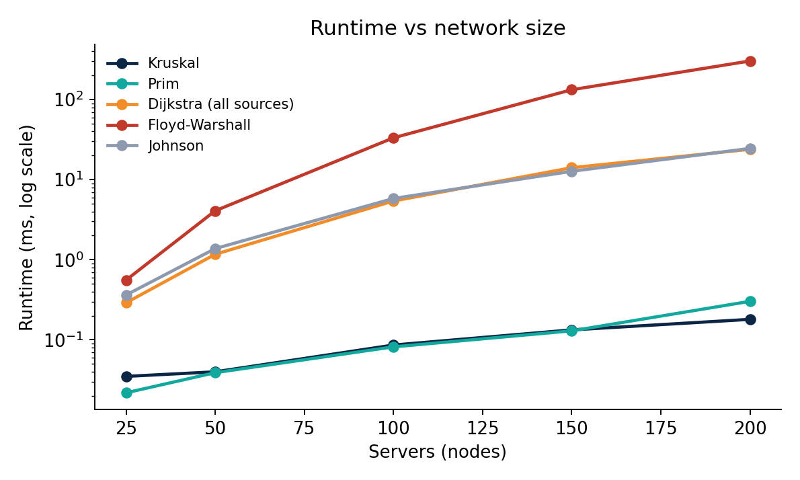
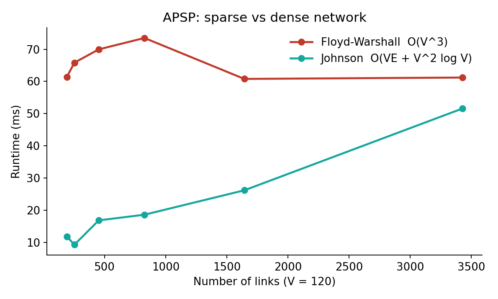
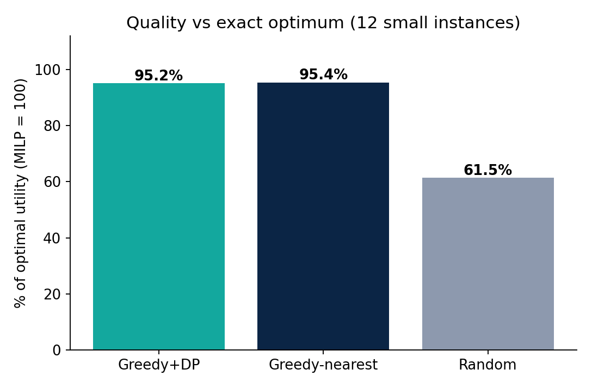
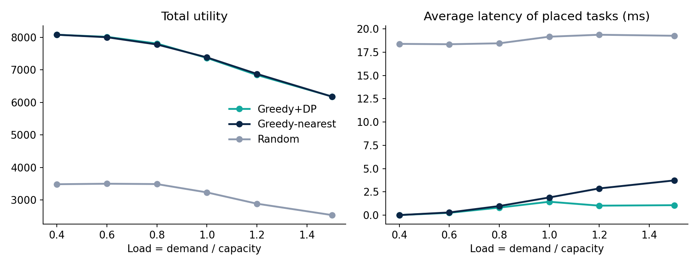

Latency-aware VM placement using graphs, greedy algorithms and dynamic programming
An end-to-end combinatorial optimization pipeline combining Kruskal & Prim MST backbones, Floyd-Warshall & Johnson APSP latency engines, and multi-round Knapsack Dynamic Programming for cloud task scheduling.
In cloud computing, servers are interconnected with physical communication links that introduce network latencies. Each task (VM or container) demands computational capacity, yields a commercial value, and originates from a user at a specific node.
With penalty parameter λ = 1.0. A task is admitted if and only if its utility is positive, without exceeding any server capacity: ∑t: s(t)=s demand(t) ≤ capacity(s).
In standard textbooks (CLRS), algorithms like Kruskal, Dijkstra, and Knapsack are taught separately. This project synthesizes them into an operational placement pipeline and empirically quantifies the architectural trade-offs.
MST for control backbone, All-Pairs Shortest Paths for user latency matrix, and Knapsack DP for per-server packings.
Enforce server memory/CPU capacity limits and network latency penalties on every placement decision.
Compare execution time and solution optimality against exact MILP solvers across varied densities and load tightness.
End-to-end architecture bridging graph algorithms, dynamic programming, and systems engineering.
Generate synthetic 2D server mesh with distance-based latency + jitter. Synthesize task demands, values, and user origins.
Extract minimum-cost spanning tree via Kruskal (Union-Find) and Prim (Heap). Trims ~74% of links for control traffic.
Compute All-Pairs Shortest Paths. Automatically selects Johnson for sparse topologies or Floyd-Warshall for dense meshes.
Proposal rounds: pending tasks propose to highest utility servers; servers execute 0-1 Knapsack DP on proposals.
Measure utility, latency stretch, capacity utilization, and compare against Nearest-First, Random, and exact MILP.
Run algorithms on synthetic topologies, drag or click servers, and explore load distributions.
Every algorithm used in the pipeline, its mathematical asymptotic bound, and role in cloud scheduling.
| Subproblem | Algorithm | Time Complexity | Space | Role in Placement Pipeline | Source Module |
|---|---|---|---|---|---|
| Backbone Network | Kruskal (1956) | O(E log E) | O(V) | Greedy MST via edge sorting and Union-Find (DSU). Drops 74% links. | src/mst.py |
| Backbone Verification | Prim (1957) | O(E log V) | O(V) | Grows tree from root using min-heap. Exact cross-check with Kruskal. | src/mst.py |
| Single-Source Latency | Dijkstra (1959) | O((V+E) log V) | O(V) | Shortest paths with non-negative latency weights. | src/shortest.py |
| Credits / Negative Edges | Bellman-Ford | O(V × E) | O(V) | Detects negative-weight cycles and computes potential function h(u). | src/shortest.py |
| All-Pairs Latency (Dense) | Floyd-Warshall (1962) | O(V3) | O(V2) | Dynamic programming matrix relaxation. Optimal when links approach V2. | src/shortest.py |
| All-Pairs Latency (Sparse) | Johnson (1977) | O(VE + V2 log V) | O(V2) | Reweighting with Bellman-Ford, then V Dijkstra runs. 12x faster on sparse networks. | src/shortest.py |
| Value Upper Bound | Fractional Knapsack | O(n log n) | O(n) | Greedy by value density (p/w). Provides continuous upper bound. | src/greedy.py |
| Per-Server Task Packing | 0-1 Knapsack DP | O(n × C) | O(n × C) | Exact pseudo-polynomial DP with back-pointer subset recovery. | src/dp.py |
| Deadline Scheduling | Job Sequencing | O(n2) | O(dmax) | Greedy by profit into latest available slot. Proven by exchange argument. | src/greedy.py |
Every server executes 0-1 Knapsack DP strictly bounded by its remaining capacity remaining[s]. Demands of chosen tasks are subtracted immediately. Thus, no server's capacity can ever be exceeded: ∑ demand ≤ capacity.
In every proposal round, unplaced tasks that get rejected by server s add s to their banned set. Since there are only V servers, a task exhausts all candidates in at most V iterations. The loop terminates in ≤ V rounds.
For each server's received proposal set, 0-1 Knapsack DP computes the exact optimal subset. While the Generalized Assignment Problem (GAP) is NP-hard, this heuristic reaches 95.2% of the global MILP optimum.
Reproducing the 4 experimental evaluations comparing runtime, density, solution quality against MILP, and performance under overload.
Single-source Dijkstra & Johnson vs cubic Floyd-Warshall.

At 200 servers, Johnson executes in 24.5 ms compared to 303.2 ms for Floyd-Warshall (12x faster). Kruskal and Prim execute in < 0.3 ms across all tested sizes.
Varying link count from 191 to 3,427 edges.

Floyd-Warshall runtime remains flat (~61 ms) as predicted by O(V3). At 191 links, Johnson is 5.2x faster (11.9 ms vs 61.4 ms). As links approach complete graph (3427 edges), Johnson scales to 51.6 ms.
12 instances solved to mathematical global optimum.

Greedy+DP achieves 95.2% of optimal utility (worst case 90.9%). Greedy-nearest achieves 95.4% (worst case 88.0%). Naive Random placement achieves only 61.5%.
Load sweep from 0.4 (underloaded) to 1.5 (heavily overloaded).

At load 1.5, Greedy+DP maintains 1.07 ms average latency, whereas Nearest-First blows up to 3.73 ms (3.5x higher!) at virtually identical utility (6,182 vs 6,179). Knapsack DP rejects low-value distant tasks from hogging capacity!
Evaluation of Kruskal/Prim MST backbone savings vs full topology mesh.
| Servers (V) | Full Links | MST Backbone Links (V-1) | Mesh Cost | Backbone Cost | Link Saving % | Latency Stretch |
|---|---|---|---|---|---|---|
| 30 | 109 | 29 | 1,280.8 ms | 210.3 ms | 73.4% | 1.76x |
| 60 | 228 | 59 | 1,919.6 ms | 334.4 ms | 74.1% | 2.42x |
| 100 | 371 | 99 | 2,590.7 ms | 469.4 ms | 73.3% | 2.68x |
Concrete operational rules derived from theoretical complexity and empirical measurements.
Use the MST backbone for distributed database replication and cluster heartbeat control (saving 74% link overhead). Route user SLA traffic strictly over shortest paths to avoid the 1.8x–2.7x latency stretch.
Deploy Johnson on sparse networks (E < V2/8). Switch to Floyd-Warshall only when link density approaches dense matrix mesh where simple array indexing beats heap overhead.
Switch placement solver to Greedy + Knapsack DP once cloud load passes 1.0. It delivers 3.5x lower latency than Nearest-First while achieving the same peak total utility.
Utility degrades from 8,080 to 6,182 as load rises from 0.4 to 1.5. Maintain 20% capacity headroom to avoid heavy latency degradation and task rejection.
Input your datacenter specifications to obtain automated algorithmic routing and placement recommendations.
Sparse network recommendation.
High load placement recommendation.
Control plane link trimming.
406 lines of modular Python 3 code across 5 algorithm families. 7/7 automated verification tests pass.
B.Tech Computer Science & Engineering (2025–2029) • Woxsen University